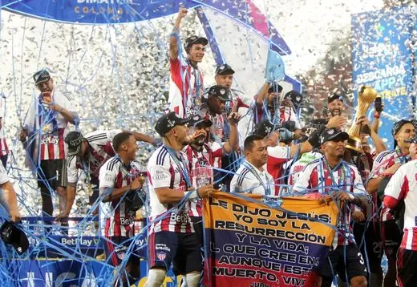
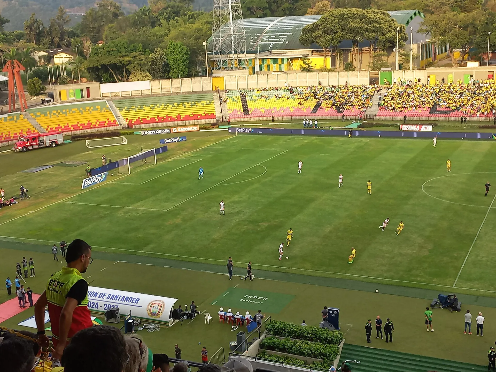
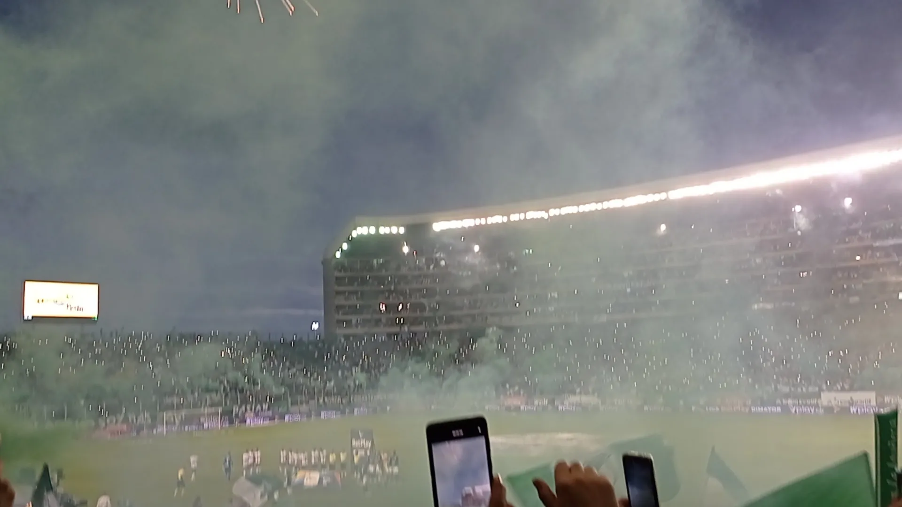
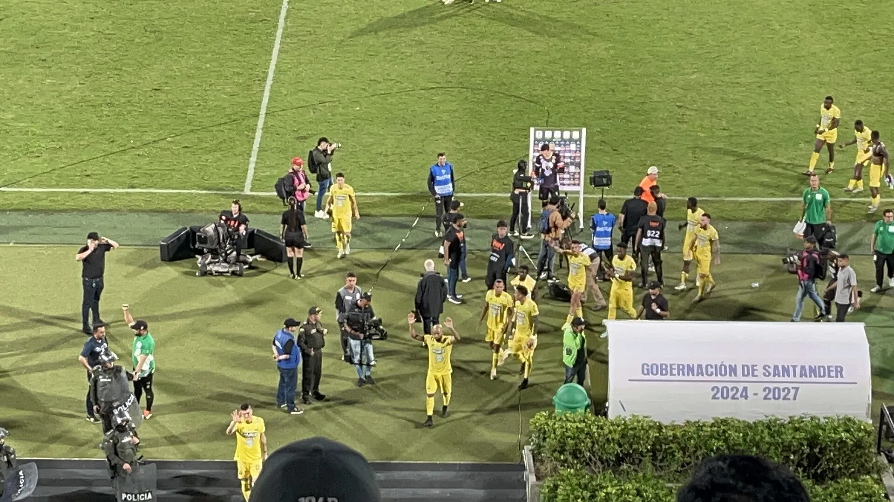
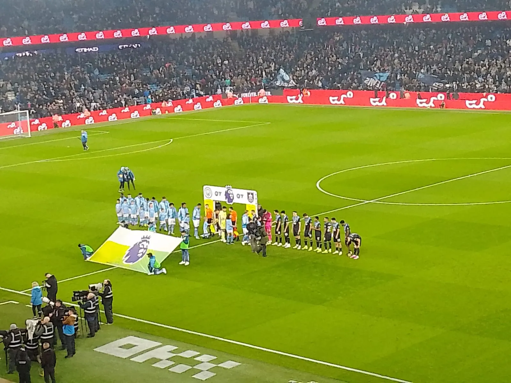
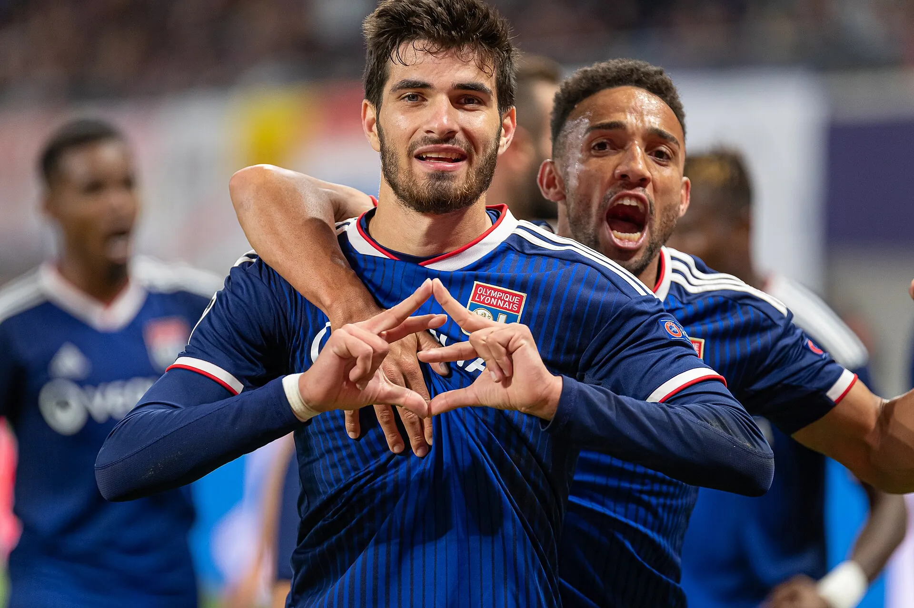
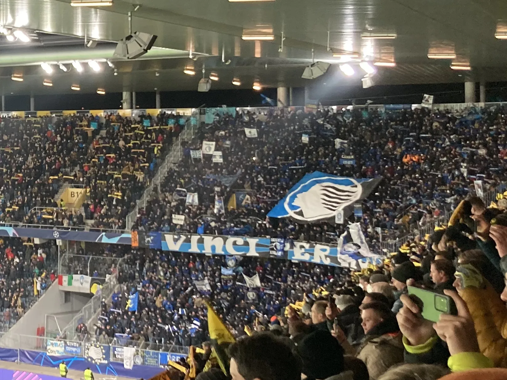
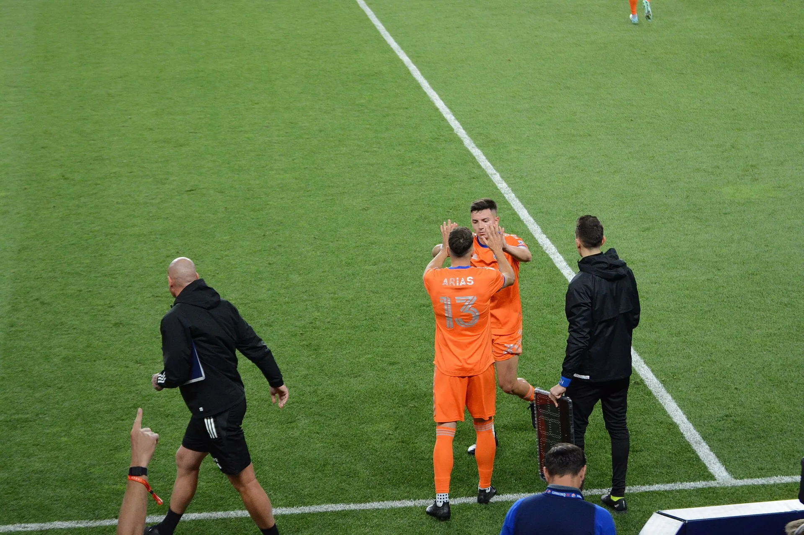
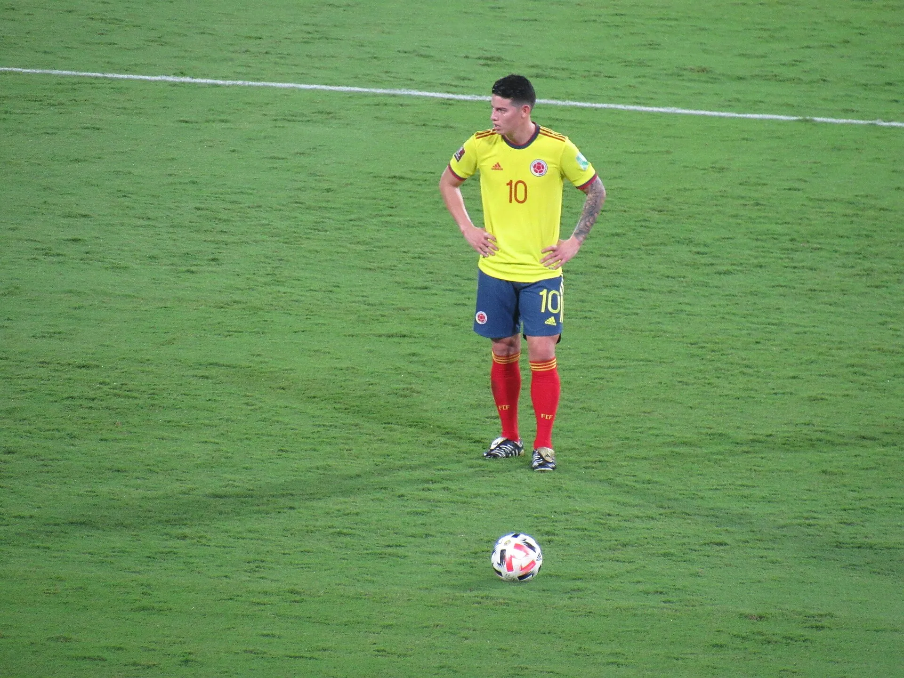
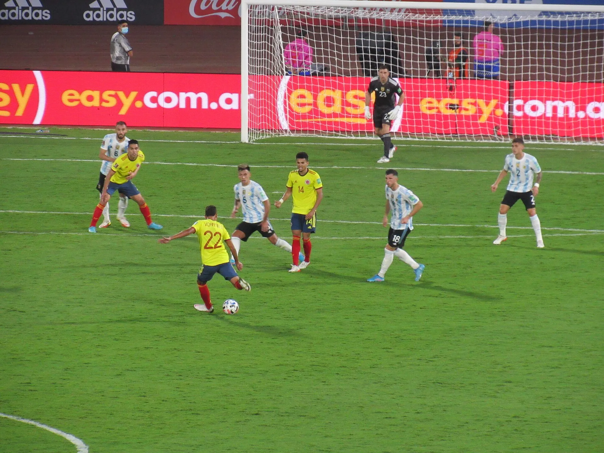

Portada de Habla Deportes
El show de las mañanas
Video: El refuerzo de Junior que nadie esperaba
La mesa analiza la llegada que casi nadie veía venir y lo que le puede aportar al equipo en lo que resta del año.
Fecha 19Liga BetPlay
Todos los partidos- Pasto 0, Junior 1, final, jue 12 nov. Partido de Junior.
- Llaneros 0, Boyacá Chicó 0, final, jue 12 nov.
- Int. de Bogotá 0, Santa Fe 2, final, vie 13 nov.
- Nacional 1, Once Caldas 1, final, sáb 14 nov.
- Águilas D. 0, Medellín 1, final, sáb 14 nov.
- Cúcuta 2, Jaguares 0, final, sáb 14 nov.
- Bucaramanga 1, Fortaleza 0, final, sáb 14 nov.
- Millonarios 2, Alianza 0, final, sáb 14 nov.
- Cali 2, Tolima 2, final, sáb 14 nov.
- Pereira 0, América 2, final, sáb 14 nov.


El partido de Junior
Junior ganó en Pasto y se acerca a los ocho
Pasto 0, Junior 1
- 14.ºen la tabla
- 22puntos
- 6pts del 8.º
El show de las mañanas
Todos los programas
Con Juan Salvador Bárcena
De lunes a viernes, de 10:00 a. m. a 12:00 m.
- L
- M
- M
- J
- V
- S
- D
Próximo programaCon la previa de Chile vs. Colombia, que se juega ese día a las 6:00 p. m.
Así va cada mañana
- Apertura y titularesLo que pasó anoche y lo que se juega hoy
- Junior en primer planoAnálisis, plantel y la previa del próximo partido
- Selección y mercadoConvocatoria, rivales y fichajes
- El debate de los oyentesLlamadas y mensajes al aire hasta las 12:00 m.
Dónde verlo
Programas anteriores
Horario y escaleta según el programa; títulos, duraciones y partido del martes: dato de ejemplo.
Junior FC
Ir a Junior FCCrónica
El día que Junior se coronó bicampeón: la noche en tres escenas
El pitazo final, la vuelta olímpica y la madrugada en la calle 72: tres momentos para recordar la noche del título.
· 7 min de lectura

Hinchada
Barranquilla rojiblanca: el barrio que llega al estadio desde las 3:00 p. m.Hace 6 horas
Plantel
Los once que más minutos suman en la Liga y por qué importaHace 9 horas
Hinchada
Video: El Metropolitano antes del clásico, en primera persona15 min
Tabla
Seis puntos del octavo: las cuentas de Junior para meterse entre los ochoAyer
Próximo partido
Junior contra Millonarios
Junior vs. Millonarios · Estadio Metropolitano
Ver la previa: Junior contra MillonariosRival, fecha y hora del próximo partido, titulares y horas: dato de ejemplo.
Liga BetPlay
Tabla| # | Equipo | PJ | DG | Pts |
|---|---|---|---|---|
| , zona de cuadrangulares1 | Nacional | 19 | +20 | 40 |
| , zona de cuadrangulares2 |  América América | 19 | +16 | 36 |
| , zona de cuadrangulares3 | Cali | 19 | +16 | 35 |
| , zona de cuadrangulares4 | Bucaramanga | 19 | +14 | 35 |
| , zona de cuadrangulares5 | Santa Fe | 19 | +12 | 34 |
| , zona de cuadrangulares6 |  Medellín Medellín | 19 | +4 | 32 |
| , zona de cuadrangulares7 |  Millonarios Millonarios | 19 | +11 | 30 |
| , zona de cuadrangulares8 |  Once Caldas Once Caldas | 19 | +4 | 28 |
| 9 |  Tolima Tolima | 19 | +2 | 27 |
| 10 |  Cúcuta Cúcuta | 19 | -5 | 27 |
| 11 | Águilas D. | 19 | 0 | 25 |
| 12 |  Llaneros Llaneros | 19 | -3 | 24 |
| 13 | Int. de Bogotá | 19 | 0 | 23 |
| 14 |  Junior Junior | 19 | -1 | 22 |
| 15 | Boyacá Chicó | 19 | -14 | 20 |
| 16 | Alianza | 19 | -15 | 18 |
| 17 |  Pereira Pereira | 19 | -12 | 17 |
| 18 | Pasto | 19 | -17 | 15 |
| 19 | Jaguares | 19 | -20 | 13 |
| 20 |  Fortaleza Fortaleza | 19 | -12 | 12 |
Cuadrangulares (1.º a 8.º)
Fuente: Datafactory · actualizado el 16 nov 2026, 12:55 p. m.
Shorts
-

Video: Qué significa «oxigenar» una lista, 44 segundos
-

Video: Tres datos de la Fecha 19 en menos de un minuto, 48 segundos
-

Video: Así se prepara la hinchada para Colombia vs. Perú, 33 segundos
-

Video: Pregunta del día: ¿Qué lateral izquierdo quieres ver?, 19 segundos
-

Video: ¿Titular o suplente? El debate del extremo, 36 segundos
5 Shorts · 3:00 en total
Títulos y duraciones de los Shorts: dato de ejemplo.
Selección Colombia
Ir a la Selección
Vs. Perú
Mercado de fichajes
- NegociandoJhon MosqueraLlega a Junior. Medellín a Junior
- CerradoKevin ArboledaLlega a Junior. Tolima a Junior
- RumorMateo SosaLlega a Junior. Millonarios a Junior
- NegociandoYair PalaciosEntre otros clubes. América a Medellín
- CerradoDylan OrtegaEntre otros clubes. Medellín a Millonarios
Nombres y datos de ejemplo.
Ver todo el mercado de fichajesFútbol colombiano
Ver todo de Fútbol colombiano
Análisis
Abajo de la tabla: cuatro equipos y un descenso que ya se calcula
Con 15 puntos el último y 18 el 19.º, la tabla del promedio empieza a pesar más que la de la Liga.

Previa
Tolima y América se miran en la zona media: la Fecha 20 los empareja
Los dos llegan con rachas opuestas al sábado en Ibagué; lo que se juegan en la lucha por los cuadrangulares.

Táctica
Millonarios y Medellín cierran la fecha con un duelo de contrastes
Uno defiende de más, el otro ataca de más. El domingo se mide cuál idea rinde mejor.
Video
Video: La mesa elige al técnico revelación del semestre en la Liga
Tres candidatos, una votación y una discusión que se fue de las manos.
Europa
Ver todo de Europa
Análisis
Un grande de Inglaterra pierde el liderato: tres razones del tropiezo
Una racha de cuatro partidos sin ganar y un problema de salida que el rival supo explotar.


Colombianos en el exterior
Ver todo de Colombianos en el exterior
Portugal
El extremo colombiano que gana minutos en un club de Portugal
Pasó de suplente a titular en tres semanas. Lo que cambió en su rol y lo que le pide el entrenador.


Fotos de Wikimedia Commons: Remux (CC BY-SA 4.0), Ángel Páez (CC BY 4.0), Steffen Prößdorf (CC BY-SA 4.0), Vincenzo.togni (CC BY-SA 4.0), Fra Casa (CC0), Hayden Schiff (CC BY 2.0) y jmmuguerza (CC BY-SA 3.0). Las imágenes son ilustrativas. Notas, horas y datos de estas secciones: de ejemplo, sin nombres reales.